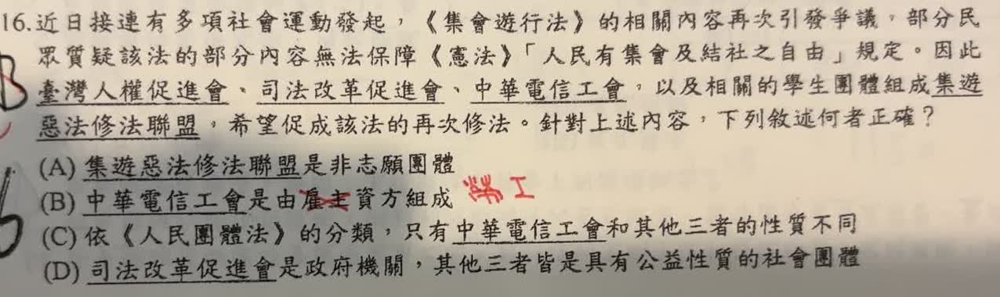

分享原卷｜第 16 題
完整原題
近日接連有多項社會運動發起，《集會遊行法》的相關內容再次引發爭議，部分民眾質疑該法的部分內容無法保障《憲法》「人民有集會及結社之自由」規定。因此臺灣人權促進會、司法改革促進會、中華電信工會，以及相關的學生團體組成集遊惡法修法聯盟，希望促成該法的再次修法。針對上述內容，下列敘述何者正確？
(A) 集遊惡法修法聯盟是非志願團體
(B) 中華電信工會是由雇主資方組成
(C) 依《人民團體法》的分類，只有中華電信工會和其他三者的性質不同
(D) 司法改革促進會是政府機關，其他三者皆是具有公益性質的社會團體
先想一想，再查看答案、解說與原圖
原卷作答：B
正確答案：C。按本題比較團體性質的用意，中華電信工會為勞工共同職業利益結合；其他團體以公共議題、公益宗旨為主，性質不同。
逐項解析
| 選項與原句 | 判讀 | 句意與判斷理由 |
|---|---|---|
| (A) 集遊惡法修法聯盟是非志願團體 | 不選 | 聯盟是基於共同目標自願結合，並非題目所稱的非志願團體。 |
| (B) 中華電信工會是由雇主資方組成 | 不選 | 工會由勞工組成，重點在維護會員勞動權益，不是由雇主資方組成。 |
| (C) 依《人民團體法》的分類，只有中華電信工會和其他三者的性質不同 | 應選 | 按本題比較團體性質的用意，中華電信工會為勞工共同職業利益結合；其他團體以公共議題、公益宗旨為主，性質不同。 |
| (D) 司法改革促進會是政府機關，其他三者皆是具有公益性質的社會團體 | 不選 | 司法改革促進會是民間團體，名稱有「司法」不表示它是政府機關。 |
詳細說明與解題步驟
一、先比較結合的原因
題中聯盟為共同修法目標而結合，屬自願性組織，所以 A 錯。判斷是否自願，應看成員加入的性質，不是看議題是否與法律有關。
二、分辨工會與雇主
工會是勞工組織，雇主資方與勞工是不同的角色。原卷選 B，正好把組織者的身分認反。公會與工會也不能只憑同音混用。
三、判讀 C 與 D
本題以團體的性質比較：工會聚焦共同職業及勞動權益，另外幾個團體則以人權、司法改革或學生公共議題為宗旨。D 把司法改革促進會當成政府機關，亦錯。
法律用語補充
《人民團體法》第4條列有職業、社會及政治團體的分類；工會的組織另有《工會法》專門規定。不要把本題的概念分類擴張成「工會直接依人民團體法設立」。
核對依據：法務部《人民團體法》第4條、勞動部〈如何籌組工會〉。題幹對活動與聯盟名稱的敘述沿用原卷歷史背景。
核對註記：已核對題幹、全部選項與必要材料；教材對應課次未確認，歸綜合。
原圖（僅本題）
